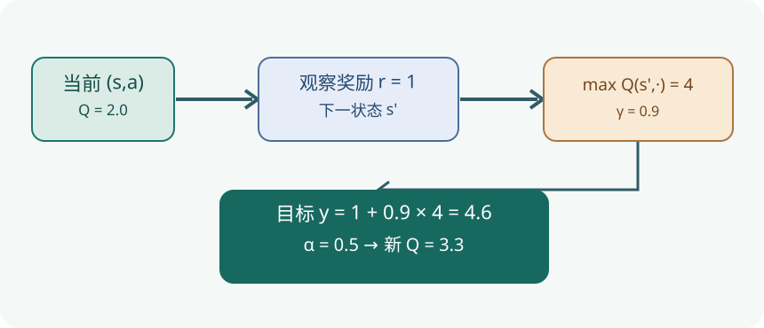

Understanding Q-learning
为什么不知道环境的转移概率，也能从一次次试错中学到最优动作？
01 · 从一个岔路口开始
想象机器人在路口选择向左或向右。向左可能立刻拿到 1 分，向右可能暂时得不到奖励，却通往未来的 4 分。单看即时奖励会选错。Q-learning 给每个“状态—动作”组合保存一个数值 Q(s,a)：在此行动、之后尽可能做对时，预期可以得到多少折扣回报。
每经历一步，就用观察到的奖励和下一状态当前最有希望的动作，修正刚才的估计。关键是：不需要预先知道环境的转移概率矩阵。

02 · 一条公式读懂更新
Bellman 最优性方程要求最优动作价值等于即时奖励与下一状态最优价值之和的期望。Q-learning 用单个采样转移替代期望，形成异步随机近似。
符号逐一解释：s 是当前状态；a 是执行动作；r 是观察到的即时奖励；s′ 是下一状态；α 是学习率；γ 是折扣因子；max 在下一状态所有合法动作中选估计最高者。方括号里的差称为 TD 误差，衡量“新目标与旧预测”的偏差。
若 s′ 是真正终止状态，下一状态价值项应置零；时间限制导致的截断不应无条件当作终止。
03 · 手算一轮，再改变学习率
设旧值 Q(s,a)=2，奖励 r=1，折扣 γ=0.9，下一状态两个动作值为 4 和 1。于是目标 y=1+0.9×4=4.6，TD 误差为 2.6。学习率 α=0.5 时，新值为 2+0.5×2.6=3.3。不是把 Q 直接改成 4.6，而是向目标走一半。
固定旧 Q=2、r=1、γ=0.9、max Q(s′,·)=4；只改变这一次更新的步长。
04 · 从一次更新到完整算法
初始化有限状态动作表，反复在环境中执行动作，观察 (s,a,r,s′)，更新对应单元。动作选择可以采用 ε-greedy：大部分时间选择当前高价值动作，少部分时间随机探索。更新目标仍使用 max，而不是实际行为策略选出的下一动作，因此称为离策略（off-policy）学习。
for each observed transition (s, a, r, next_s, terminated):
future = 0.0 if terminated else max(Q[next_s])
target = r + gamma * future
Q[s, a] += alpha * (target - Q[s, a])注意，这段是教学伪代码；没有实现探索、状态编码、环境接口或收敛所需的学习率调度。
05 · 1992 年论文到底证明了什么？
Watkins 与 Dayan 的核心理论贡献是表格型 Q-learning 的收敛论证：在论文所述的有限离散状态动作设定、充分重复采样以及适当学习率条件下，动作价值可以以概率 1 收敛到最优值。其证明不是“任何深度 Q 网络都保证收敛”，也不是“固定 ε 和固定 α 的任意环境都保证收敛”。
06 · 与 SARSA、DQN 和 Bellman 方程的关系
SARSA 使用实际下一动作 a′ 的 Q(s′,a′) 作为目标，属于同策略 TD 控制；Q-learning 使用 max Q(s′,·)，无论行为策略如何探索；DQN 用神经网络近似 Q，并引入经验回放和目标网络。它们共享 Bellman 式 bootstrap 思想，但优化对象、训练稳定性与理论保证并不相同。
实践中，表格型 Q-learning 适合小规模离散任务、教学和可解释基线。连续状态、大动作空间或部分可观测任务需要额外表示、近似或算法设计。
原始资料与延伸阅读
- Watkins & Dayan (1992), Technical Note: Q-Learning, Machine Learning 8:279–292：原始算法与收敛定理。
- 作者机构提供的论文 PDF：用于核对证明适用范围。
- Sutton & Barto, Reinforcement Learning: An Introduction (2nd ed.)：第 6 章比较 TD 控制与 SARSA。
- Mnih et al. (2015), Human-level control through deep reinforcement learning：后续 DQN 方法。
文中所有数值均为明确标注的独立教学算例；未声称复现原论文基准。